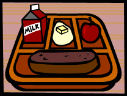

This
morning I dined with my host family. Breakfast consisted mainly of differently
shaped pork by-products and preservative filled foodstuffs. Mrs. LeBore
filled my plate with various fried meats and doughy rounds called "pan
cakes". Against my better judgment, I selected a pink Pop Tart, which
is a sort of rectilinear confection, copiously frosted on one side containing
a viscous sucrose filling. I did not find it pleasing.
The girl, June, sat glaring at me with a sour look on her face. I could
not figure out what I had done, if anything, to cause this reaction. I
do not feel I am invading her space, as I am sleeping in the boy's room
for the duration of my stay. I did overhear a conversation Mrs. LeBore
had with her, the transcript of which is attached below:
Mrs. LeBore: "June, sweetie, I want you to look after Katerina
today. It's her first day of school here in America and she might be
a little confused."
June: "Come on Ma! I have enough crap to deal with. Give
me a break."
Mrs. LeBore: "Sweetie, don't say crap. Think of how overwhelmed
Katerina must feel, coming all the way from Lithuania in hopes of getting
a top rate American education. I'm sure the French family your brother
is staying with are going to look out for him while he's under
their care."
June (under her breath): "Like I care. Those Frenchies better make
sure they keep an eye on their valuables while he's there."
These humans are very trusting! They actually believe the boy is attending
school in France.
Mrs. LeBore: "Juuunnnneeee..."
June: "What ever."
June's resistance to interaction with me is interesting. I must make
a special effort to allay her anxieties regarding me, whatever they may
be.
We rode to the learning institution on a "school bus": a long,
yellow death trap of a vehicle which provided seat belts for the driver's
safety only. Even compared to my rickety old Katalyst Neo, it was a very
bumpy ride indeed...
I sat with June in the back seat, which seemed to me the bumpiest of all.
We sat in silence. June refused to acknowledge me, and I was too busy
observing my immediate surroundings and the neighborhood we were hurtling
through to care very much.
After the bus made four stops to pick up passengers, the hulking male
youth sitting in front of us abruptly turned around and said, "Well,
if it isn't the school reject."
I
could only assume he was speaking to June, as I have not even enrolled
in school yet.
June scowled and said under her breath (to no one in particular), "Oh
great."
"Hey Freak, who the hell is that? Did you finally find a loser stupid
enough to be your friend?" He was referring to me, which was evidenced
by the stubby finger he jabbed in my direction.
"She's an exchange student, Todd." June stated with scorn.
For the first time she looked directly at me and grumbled, "Maybe
if his brain capacity was in proportion to his muscle mass he'd pick up
on stuff like that."
Todd broke into an obnoxiously loud guffaw. "Haha! So your parents
had to import a friend for you? From another country!? HAHA!"
The blonde female sitting with Todd giggled, although she did not turn
around and join in the taunting. I could sense that her laugh was more
closely related to nervousness than actual malice. I regarded the male:
muscular physique, low brain capacity. This must be what the humans call
a "Jock". His aggression level was extremely high; I will add
him to my research subject files.
Todd turned around again and put his arm around the giggling girl. He
laughed and said, "Hahah, imported!"
June slumped down in the seat with a most annoyed look on her face. She
stared at the back of Todd's head with fire in her eyes and muttered,
"Jerk off."
Since I have already earned several higher degrees on Katatonia, and my
memory bank has been fortified with more than enough basic knowledge an
American teenager is required to know, the first half of the day progressed
with out incident. Despite my mental prowess, I was totally unprepared
for what happened fifth period. I witnessed what is known in high school
parlance as "the caf". One hundred twenty-three boisterous students
crowded a large room filled with rectangular and circular tables. Industrial
sized, strategically placed trash receptacles were situated around the
perimeter of the room. The stench of mushy, overcooked "meat loaf"
permeated the stagnant, recycled air. (Note: I must reserve a sample to
distinguish which meat is involved in the creation of this loaf-like substance.
I am fairly certain it contains no bacon.)

Most of the students ignored me as they consumed mass quantities of
sugary treats and fizzy drinks. Some looked at me suspiciously, but I
have since learned that they do not suspect my alienness, they are simply
distrustful of intruders on their territory. Teenagers, I find, are highly
territorial.
I scanned the room and spotted June. She was eating alone, so I made my
way in her direction stepping over discarded Ho-Ho's wrappers and the
occasional squashed sandwich. June is an interesting study of anger and
insecurity, yet I feel at ease with her for some odd reason. Before I
made it to the table, however, someone called out to me.
"Yoo hoo! Kataaareeeeena!"
It was Courtney Calloway. Student council president. Honor Society member.
Treasurer of the Foreign Language Club. Proficient in geometry, American
history, and baton twirling.
"Remember me? Courtney? We're in the same 4th period Trig class?
Why don't you join us over here? I saved a seat just for you."
Courtney was sitting at a circular table with Todd, June's tormentor from
the bus, the giggling girl, and two other girls who looked much like Courtney.
She was waving a celery stick around in the air as she called to me. I
do not recall seeing celery sticks when I made my way along the food line,
she must have brought them from home.
Todd
pointed at me and said scornfully to Courtney, "Hey, we don't want
that foreign freak sitting with us!"
I shrugged at Courtney, who looked somewhat angry, and sat down across
the table from June. She sucked critically on the straw sticking out of
her soda. I opened a half-pint of milk and took a swallow. We stared at
each other and then she said, "You know you don't have to sit with
me. I see you've almost managed to get sucked into the popular crowd already.
They won't want you anymore if you hang out with a weirdo like me."
I just shrugged. It did not matter what group I got "sucked into".
I could observe the humans from any angle and still complete my mission
in a satisfactory manner. I was contemplating this fact when I caught
a glimpse of a blue blur heading in my direction. Before I had time to
react I was hit in the face with something cold and gelatinous.
It slid down my face and landed with a defiant plop onto my orange food
tray. June was aghast. I dipped my finger into the blue goo and tasted
it. Berry Blue Jell-0, I believe. It was on the menu today. The cafeteria,
which was previously teeming with deafening chatter, went dead silent.
The only sound that could be heard was Todd – laughing as if he pulled
the greatest stunt since Finster scaled the side of the KSA Communications
Tower and broadcast the new Chum single.
I wiped my face with a paper napkin and glared at Todd. Against my will,
my antenna reactors fired up. While I realize my training manual stipulates
that I use my powers for good, not evil, I simply found myself unable
to resist educating that lummox in the ways of total public humiliation.
My laser shot over June's head towards Todd. I was very disconcerted because
June was somehow able to see the laser. She looked extremely surprised.
This is very odd, since the Hypno-Façade is supposed to mask all
alien aberrations. I must look into this flaw later.
"Come on Tiffany," Todd said, as he got ready to leave. "Let's
get out of here. The caf is so lame." Tiffany, of course,
giggled. Todd stood up to leave and revealed his shortcomings to the entire
cafeteria.
"Todd, honey," Tiffany said, "Where are your pants?"
The
cafeteria exploded in jeers and catcalls.
"What the....! Augh!" Todd 's cheeks blazed as he ran out of
the cafeteria, in search of his errant dungarees, I suppose. Tiffany followed
behind, her pretty manicured hand barely concealing her smile.
June turned abruptly and stared at me intently. Her eyes narrowed to suspicious
slits. I simply stared back at her. She regarded me warily for a minute
and then she shot me a crooked smile. I smiled back. We resumed drinking
our respective drinks as the noise level in the cafeteria resumed its
normal pitch.
June finished her soda with a noisy slurp and said, "So, you wanna
sneak out with me on Friday? I'm going to see a band play at my friend's
cousin's house party in Massapequa."
Ah! Garage band music! The raw energy of amateur musicians is just the
thing I need to unwind from a tense day of high school. It might not be
New York City, but at least there is a minute chance that the band will
rock. For the time being, it will have to suffice. I will file a full
report subsequently.